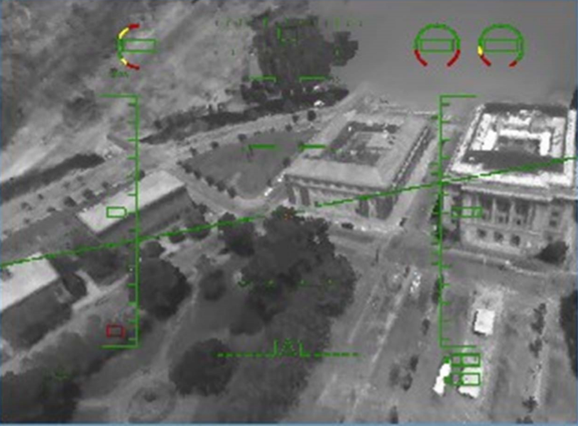
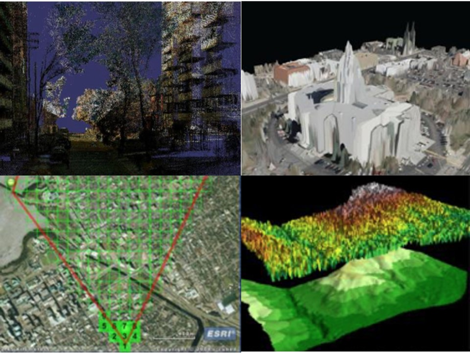
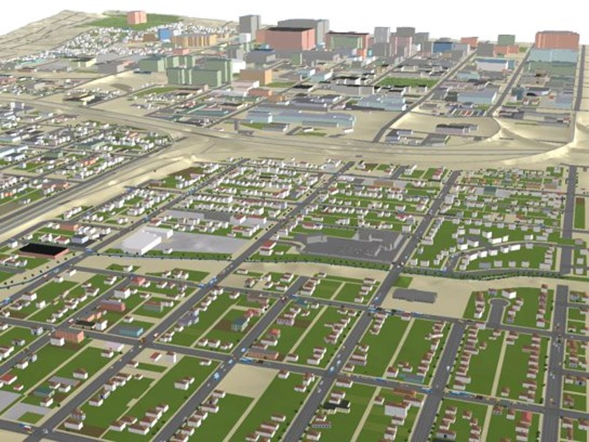

Leo Salemann
Agile Coach, Technical Leader, Lifelong Learner
Helping cat-herds become wolf-packs
Papers
-

Polygon-Free Modeling & Simulation
Presented at the 2010 Fall Simulation Interoperablity Workshop
In Polygons, Point-Clouds, and Voxels, a Comparison of High-Fidelity Terrain Representations, we made a case for sparse and octree voxel models as a space-efficient means of representing high-resolution terrain. In this paper, we will show how this terrain representation can form the basis of a new generation of live, virtual, and constructive (LVC) simulation systems, which can execute directly on a volumetric runtime terrain representation. We will begin with an examination of the terrain generation process, and demonstrate how a voxel-based terrain representation can be more conducive to fusion of “fresh-from-sensor” geospatial data when compared to conventional polygon-based terrain representation. We will then look at the terrain extent and content requirements of some typical LVC simulation systems, and derive analogous requirements in terms of voxel-count and resolution. Finally, we will establish some performance requirements for real-time visualization and terrain queries, and survey some available technologies to help reach these performance goals.
Download the slides. Read the paper. Learn more about the workshop. -

Polygons, Point-Clouds, and Voxels
A Comparison of High-Fidelity Terrain RepresentationsPresented at the 2009 Fall Simulation Interoperablity Workshop
Polygonal representations have proven to be an efficient means of representing terrain environments at current levels of fidelity. Regular Triangulated Networks (RTNs) are a computationally-efficient means of capturing all posts in an elevation raster, while Triangulated Irregular Networks (TINs) can provide a more natural terrain appearance with fewer polygons. Both of these representations have done well at modeling terrain from sensor data with 1-meter or larger ground separation distance, but what happens when such data are available at decimeter, centimeter, or even sub-centimeter resolution? Is there a “cross-over” point where non-polygonal representations can capture 3D gridded earth measurements with less storage, and/or in a manner conducive to faster queries or rendering? This paper will compare the effectiveness of polygons, point-clouds, and voxels at representing ultra-high resolution terrain environments. We will compare the storage footprint of a high-resolution terrain data set in point-cloud, polygonal, voxel-grid, sparse voxel and octree voxel forms. modeling and simulation..
Download the slides. Read the paper. Learn more about the workshop. -

Smaller, Thinner, Faster: The Evolution of Terrain Database Generation Systems
2006 Fall Simulation Interoperability Workshop
Various factors have influenced the evolution of Terrain Database Generation Systems (DBGS) over the years. Changes in source data types, simulator capabilities, and database production requirements have led to tools with very different capabilities. The “natural history” of terrain database generation systems can be decomposed into “eras,” each with its own set of terrain database (TDB) generation requirements and resulting DBGS capabilities. For purposes of discussion, this paper will define these eras as the 3D Visualization Era, with its emphasis on manual construction of 3D terrain databases; Early and Late Geographic Information Systems (GIS) Eras, marked by the availability of electronic vector data sources and the rise of constructive simulation; and finally the current era of Source Proliferation, in which quality electronic data is widely available, and the emphasis is on systems that pull from multiple data providers and push to multiple consumers – with a minimal turnaround time in between. The paper will conclude with a description of our response to the requirements of the Source Proliferation Era – the Organic Geospatial Repository.
Download the slides. Read the paper. Learn more about the workshop. -

Improvements in Generating and Destroying Ultra-High Resolution Buildings
2005 Fall Simulation Interoperability Workshop
In previous work, we have described the Automated Building Generation System (ABGS), a methodology for generating complex buildings for urban environments from minimal data. The ABGS is completely configurable, creating geotypical buildings when only footprint information is known, geospecific buildings when exact interior and attribution is available, or any level of fidelity in between. We also introduced the Ultra-High Resolution Building Simulator (UHRBSim); a real-time damage simulator for buildings constructed in an open XML/X3D format, such as those produced by ABGS.
In this paper, we discuss recent improvements to the ABGS and UHRBSim systems. The ABGS has undergone a first round of optimization to increase the building generation speed by an order of magnitude. Functionally, ABGS has been extended to produce elevator shafts, stairwells, below-ground level floors such as basements or parking areas, and shaped roofs. All features conform to the UHRB Environmental Data Model (EDM), which is a subset of the OneSAF Object System (OOS) EDM.
Additionally, the ABGS now produces a supports relationship, which describes structural support between various components of a UHRB. Although we have a default set of relationships in the ABGS, the relationship format is completely flexible and can be applied directly to any building construction model; for example, a dropped ceiling which is supported by the subfloor above.
The UHRBSim damages all new ABGS features, and calculates secondary damage based on the supports relationships. Such damage may be recursive, with a single shot being the proverbial straw that brings down the entire structure. In addition, the UHRBSim creates and coalesces rubble piles as structures are damaged, affecting building accessibility and mobility, and potentially disabling any units underneath.
Download the slides. Read the paper. Learn more about the workshop.